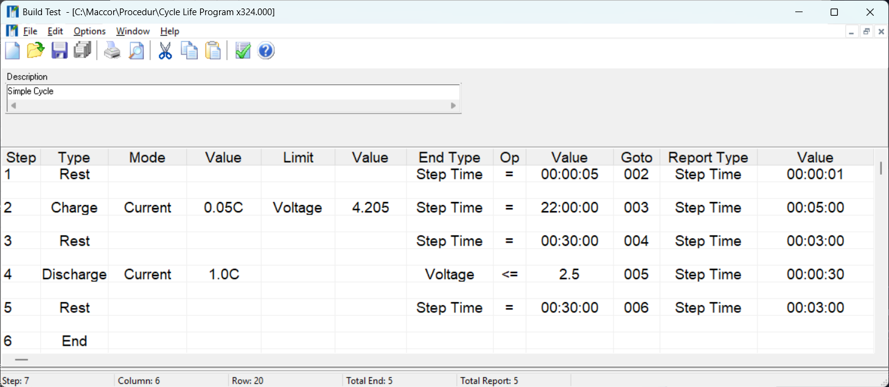

Build Test — Procedure Editor
A grid-based test procedure editor where every cell is menu-driven and only valid entries are permitted. Build simple formation cycles or complex nested-loop reliability programs with the same tool — validated at every step before execution.
Design Test Procedures with Confidence
Menu-driven cells, built-in syntax checking, and a structured grid layout prevent errors before they reach the tester.
Procedure Editor — Cycle Life Program

How Build Test Works
Build Test presents each procedure as a structured grid where each row is one step and each column is one parameter. Every data entry cell is menu-driven — clicking a cell opens a dropdown showing only the valid options for that field in that step type. This prevents syntax errors before they are submitted. The built-in syntax checker runs as a final validation, catching any remaining issues and reporting them with the step and column reference.
Available Step Types
- Charge / Discharge: CC, CV, CP, CR, CC-CV (single step), waveform
- Rest: Open-circuit hold with configurable duration and voltage-change end condition
- AdvCycle: Increments the cycle counter and loops back — the primary cycle-loop step
- Set Digital Output: Drives digital I/O lines to trigger external equipment
- Get SMBus / CAN: Reads smart battery or CAN bus data at a procedure step
- AC Impedance: Triggers an impedance measurement at the configured frequency
- End: Terminates the procedure cleanly
Up to 16 End Conditions Per Step
Each step can have up to 16 independent end conditions. When any condition is met the step ends and branches to the configured destination. Available end condition types include:
- Voltage (absolute, delta, rate of change)
- Current (absolute, delta)
- Step Time, Test Time
- Capacity (Ah, Wh) — absolute and half-cycle relative (LHCAhr, LHCWHr)
- Auxiliary inputs — temperature, pressure, voltage (absolute and derivative)
- Loop count — terminate after N repetitions
- Digital input state
- SMBus register value
- CAN signal value
Why Engineers Rely on Build Test
- Error prevention at entry: Menu-driven cells make invalid entries structurally impossible for most fields
- CC-CV as a single step: No need to construct a separate CV taper step — the transition is handled internally, reducing procedure complexity
- Nested subroutines: 127 primary steps plus subroutine calls yield effectively unlimited program depth for complex multi-stage programs
- Visual loop highlighting: Font colour and style customisation makes loop structures and subroutines visually distinct at a glance
- Template reuse: Procedures are saved as .bt2 files and can be shared across systems, teams, and sites via MIMS Server synchronisation
Frequently Asked Questions
How do I build a CC-CV charge step?
Select "Charge" as the step type and "CC-CV" as the mode. Enter the CC set point current and the CV voltage in the set point field. The transition between CC and CV phases is handled automatically by the firmware — no separate CV step is needed. Use a Current end condition on this step to terminate when the taper current drops below your C/20 or C/10 threshold.
Can a procedure reference auxiliary input values in end conditions?
Yes. Any configured auxiliary input — thermocouple temperature, thermistor temperature, auxiliary voltage, or pressure — can be used as an end condition. Both absolute threshold (Temp Max) and derivative conditions (+d1 rate, +d2 acceleration) are available, enabling thermal runaway detection logic directly within the procedure.
Continue in the Suite
- MacTest — Test Execution
- Build Test — Procedure Editor
- MIMS Client - Data Analysis
- MIMS Server — Data Management
- Data Export — Convert Data to ASCII
- Software Suite